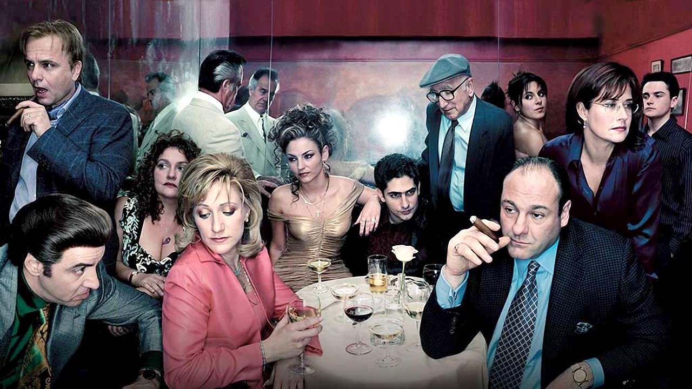
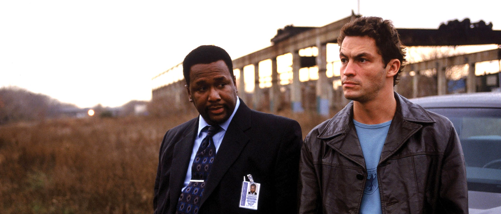
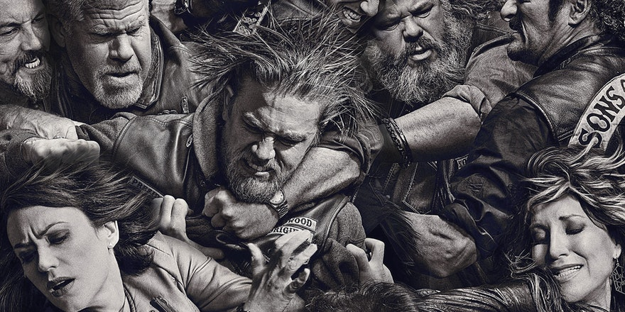
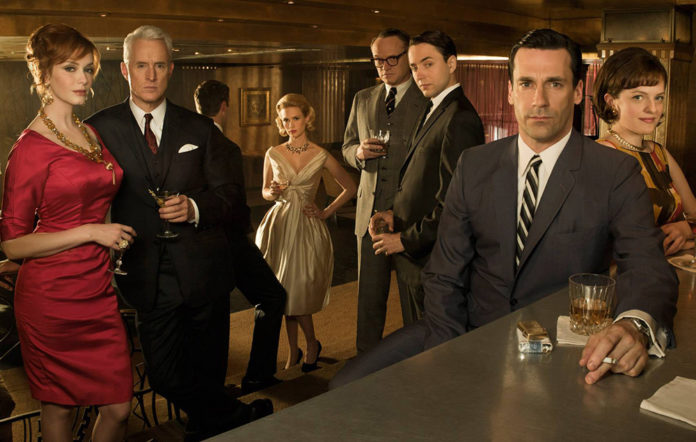
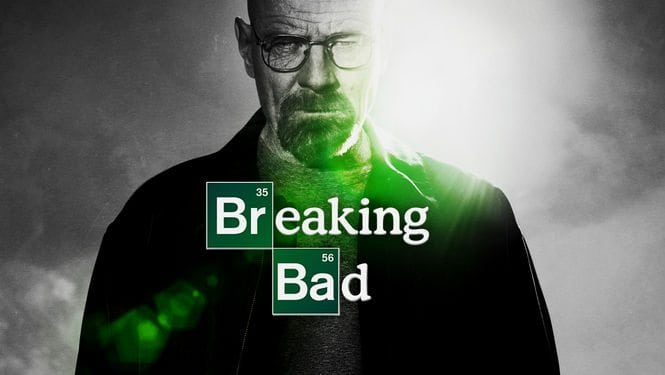
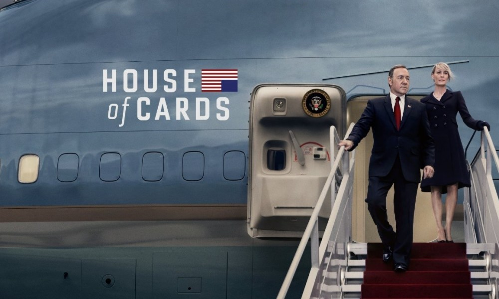
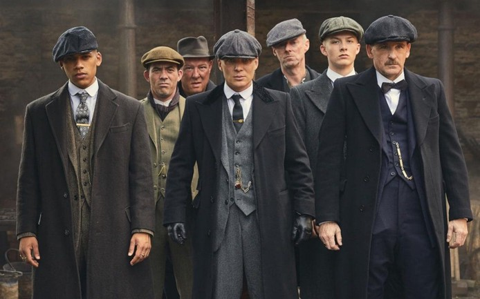
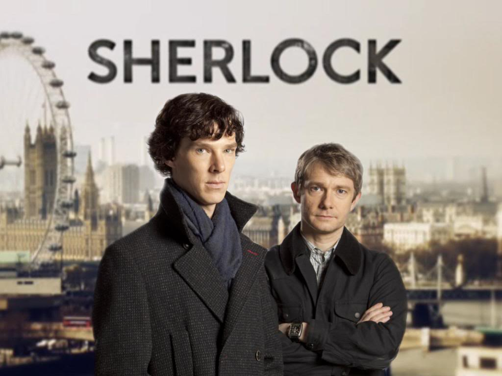
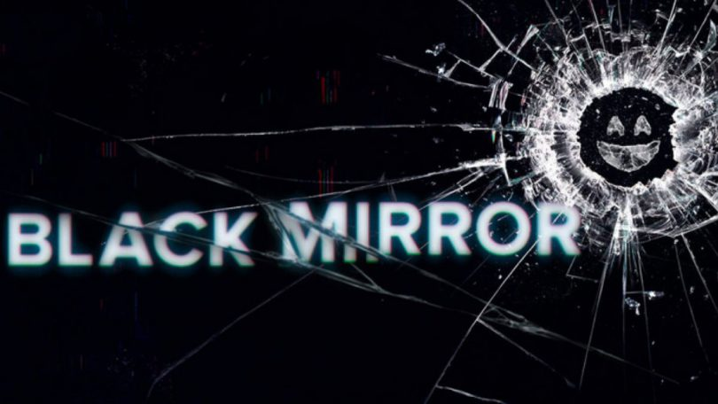

1. Porodica Soprano (The Sopranos)
Porodica Soprano je na naše ekrane došla baš pred početak 21. veka, a pošto se snimala sve do 2007. godine, može se slobodno smatrati obeležjem njegove prve decenije.
Radnja prati Entonija (Tonija) Soprana, čoveka u svojim četrdesetim koji drži firmu koja se bavi recikliranjem otpada, otac je dvoje dece i istovremeno šef italijanske mafijaške porodice. U pokušaju da pronađe balans između dva potpuno razlilčita života koje vodi završava kod psihološkinje Džernifer Melfi na lečenju depresije. Kroz šest sezona i osamdeset i šest epizoda ova serija pokazaće vam koliko loših stvari čovek može uraditi iako polazi od pravih vrednosti – poštovanja porodice, časti i prijateljstva.
Serija je inspirisana mafijaškom porodicom DeKavalkante koja je živela u Nju Džerziju u vreme kada je Čejs odrastao i postala je kultna likom Tonija Soprana koji je obeležio glumačku karijeru pokojnog Džejmsa Gandalfinija.

2. Doušnici (The Wire)
Baltimorska krimi drama još je 2002. godine promenila ono što vam prvo pada na pamet kada čujete da se neka serija bavi odnosom policije i kriminalaca. U njoj prvenstveno nema jasne razlike između dobrih i loših momaka i sve što mislite da znate u jednoj epizodi bude promenjeno u sledećoj.
ored dilovanja narkotika, bavi se korupcijom u vladi i birokratiji, školi i medijima – izbegavajući velike pobede pokazuje osvešćujuću sliku surove realnosti. Kroz svojih 5 sezona i 60 epizoda oguljena je predstava o američkom snu i o tome šta nam ostaje nakon borbe protiv sistema.

3. Sinovi anarhije (Sons of Anarchy)
Priča o bajkerskom klubu ne zvuči toliko zanimljivo dok ne počnu da se otkrivaju tajne koje vas uvlače u duboko u porodicu Teler/Morov. Iako klub javno drži automehaničarsku radnju, njihov glavni posao je ilegalni uvoz oružja, njegova prodaja i zaštita kamiona koji prevoze ilegalnu robu.
Godinama održavani prijateljski odnosi sa policijom i povremeno zastrašivanje stanovnika Čarminga (izmišljenog gradića u Kaliforniji) drže ih na granicama zakona, ali se te granice stalno mute. Preispitivanje glavnog lika, Džeksona Džeksa Telera, o klubu, životu koji vode i koji mu je nametnut, centralna je slika serije.
Sve priče svode se na jedno pitanje – šta biste sve uradili za porodicu i klub?

4. Ljudi sa Menhetna (Mad Men)
Svojevrsna istorijska drama Metju Vajnera na male ekrane stigla je 2007. godine i sedam sezona vodila nas je kroz poslovni i privatni život kreativnog direktora marketinške agencije Donalda (Dona) Drejpera.
Centralna tema ove serije su njeni likovi, ne toliko događaji, nego njihove istaknute osobine, postupci, reakcije i međusobni odnosi. To je ono što je gledaoce zadržalo onda i kada nije bilo „klif hengera“ iz epizode u epizodu.
Serija nije ostala ravnodušna na pitanja seksizma na radnom mestu, prevara i neverstva, balansiranja roditeljstva i karijere, kao ni na istorijske događaje koji su se dešavali šezdesetih godina kada je radnja serije i smeštena.
Kada su ga pitali zašto je izabrao da seriju smesti u prošli vek, Vajner je rekao da je svaki put kada je pokušao i našao nešto zanimljivo što je želeo da radi, to se desilo baš 1960-ih. Taj nezaboravni period, ovom mnogima omiljenom serijom, oživeo je za nas.
5. Čista hemija (Breaking Bad)
Krimi drama koja je 2013. godine ušla u Ginisovu knjigu rekorda kao kritički najhvaljenija serija svih vremena.
– Ovo je priča o profesoru hemije Volteru Vajtu koji saznaje da boluje od raka pluća i odlučuje da zajedno sa svojim bivšim učenikom Džesijem Pikmenom pravi kristal met kako bi zaradio dovoljno novca da obezbedi porodicu nakon smrti. Njihov odnos doživljava mnoge promene, pa preko profesorskog, poslovnog, prijateljskog, ponekad dolaze i do porodičnog – odnosa između oca i sina. Oba lika kroz 62 epizode upoznaju sebe i menjaju potpuno vaše mišljenje o njima u svakoj novoj situaciji u kojoj se nađu.
Mnogi kritičari su ovu seriju nazivali onim što se dešava kada nastupi kriza srednjih godina, a pisac Vins Giligan rekao je da je u slučaju Voltera Vajta to
6. Kuća od karata (House of Cards)
Kevin Spejsi i Robin Rajt kao Frenk i Kler Andervud postali su svojevrsni simboli kako
ostatak sveta gleda na američku politiku. Serija prati uspon Frensisa Dž. Andervuda, demokrate i lidera
većine u Kongresu, čiji je jedini cilj da postane predsednik Sjedinjenih američkih država.
Njegova supruga, sa kojom ima neraskidivu vezu, ali i vrlo komplikovan odnos, nije tu samo da bi mu u
tome pomogla – ona ima sopstvene političke ambicije i neretko se razlikuju od njegovih.

Manipulacija, korupcija i kriminal kao rezultati krvave borbe za moć, provlače se kroz
65 epizoda i gledaoce drže u iščekivanju koja je sledeća granica koja će biti izbrisana zarad želje da
se vlada najmoćnijom nacijom na svetu.
O sličnosti onoga što se dešava u seriji i realnosti SAD-a u poslednjih godinu dana, Spejsi je rekao da
se nekoliko puta desilo da se negde između snimanja i emitovanja epizoda stvari koje su odglumili i dese
u stvarnom životu, ali da to nisu oni ukrali iz novinskih naslova, već obrnuto.
7. Birmingemska banda (Peaky Blinders)
Radnja prati gangstersku porodicu Šelbi iz Birminghema u Engleskoj, u periodu nakon
Prvog svetskog rata, na čelu sa Tomasom, koja se bavi ilegalnim klađenjem i nameštanjem konjskih
trka.
Tomas je praktično nekrunisani kralj Birminghema, ali njegove ambicije su ga oduvek vodile dalje od
rodnog grada, a njegova snalažljivost čini da verujemo da ne postoji situacija koju ne može okrenuti u
svoju korist.

Važnost odanosti porodici, verovanje u Boga, traume iz preživljenog rata, zabranjena
ljubav i mnogo ispijenog viskija već pet godina drže nas prikovane za ovu akcionu dramu Stivena Najta.
Sve to, plus muzika Nika Kejva.
Peta, najverovatnije poslednja sezona, stiže nam 2019. godine, što ostavlja dovoljno vremena da se
znanje iz dvadeset i četiri emitovane epizode obnovi.
8. Igra prestola (Game of Thrones)
Skoro pa više nema ko nije čuo za fantastično ostvarenje bazirano na knjigama Pesma leda i vatre Džordža R.R. Martina, od momenta kada je izašla prva epizoda 2011. pa do trenutnog iščekivanja poslednje sezone 2019. godine.
Martin se istorijom služio kao inspiracijom, ali je njegova epska fantastika donela mnogo više nego što je ijedna istorijska serija pre nje. Borba za gvozdeni presto i vlast nad Sedam kraljevstva između plemićkih porodica vodi se dok se njihove sudbine prepliću sa nepovratnim posledicama.
.jpg)
Ono što mnogi kritičari nazivaju konfliktom između ljudskog duha i ljudskog ega, učinilo je ovu seriju najnagrađivanijom serijom ikada. Jedno je sigurno, ne treba se pretrano vezivati za njene glavne likove, jer – kada igraš igru prestola ili pobediš ili umireš.
9. Šerlok (Sherlock)
Dojlov brilijantni detektiv iz Bejkerove ulice već je godinama bio zanimljiv različitim produkcijskim kućama, a svaka adaptacija knjiga naišla je na pozitivne reakcije kako publike, tako i kritičara. Međutim, BBC je, zajedno sa Benediktom Kamberbačom, Šerloka Holmsa kakvog smo navikli da gledamo prebacio u savremeno doba – i postigao najveći uspeh do sada.
Na svake dve godine, počevši od 2010, izbacivane su po tri epizode (ako izuzmemo novogodišnje specijale), koje više liče na male filmove, nego na epizode serije. Scenario, gluma, kostimi – sve je dovedeno do savršenstva.
Martin Friman, čija je gluma doktora Votsona naišla na jednake hvalospeve kritičara, rekao je da je i on odrastao sa drugačijom slikom Votsona, ali mu se ovaj novi više dopada – on drži blog, koristi aj-fon i beskrajno je uporan.
10. Crno ogledalo (Black Mirror)
Black Mirror, naučno-fantastična serija o neočekivanim posledicama razvoja tehnologije na ljudski život od samog početka upozorava na ono što jako brzo može postati naša realnost. Sam autor, Čarli Bruker, rekao je da mu je bio cilj da pokaže sve opasnosti razvoja tehnologije i naše zavisnosti od nje.
Iako je svaka epizoda zasebna, glumačka postava i priče su drugačije, sve govore o različitim stranama jedne iste pojave – kako postajemo robovi tehnologije i kako to ne možemo da zaustavimo. Ovo je sigurno serija koja će vas nervirati, od koje će vam povremeno biti muka, ali koja će vas isto tako podstaknuti na razmišljanje možda više nego ijedna sa ove liste.